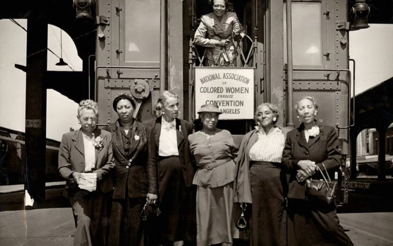

 JBased on JSTOR Research Collections: Behind the Scenes of the Civil Rights Movements SeriesReveal Digital Collections Toledo’s Most Singular Pharmacist The Ella P. Stewart Scrapbooks offer insight into the life and legacy of a pioneering Black woman who broke color barriers and helped birth the fight for civil rights. 10 min read